load("data/midiPISA.rda")Kategorik Veriler
Bu derste kullanacağımız midiPISA veri seti; öğrenci id (OGRENCIID), sınıf düzeyi (SINIF), cinsiyet (CINSIYET), anne eğitim düzeyi (Anne_Egitim), baba eğitim düzeyi (Baba_Egitim), okumaktan zevk alma (OKUMA_ZEVK), ST097Q01TA, ST097Q02TA, ST097Q03TA, ST097Q04TA, ST097Q05TA, okuma puanı olası değer 1 (ODOKUMA1), okuma puanı olası değer 2 (ODOKUMA2), okuma puanı olası değer 3 (ODOKUMA3), okuma puanı olası değer 4 (ODOKUMA4), okuma puanı olası değer 5 (ODOKUMA5) değişkenleri olmak üzere toplam 16 değişkenden oluşmaktadır. Veri Seti
önce veriyi inceleyelim
library(tidyverse)Warning: package 'ggplot2' was built under R version 4.4.3Warning: package 'purrr' was built under R version 4.4.3Warning: package 'dplyr' was built under R version 4.4.3── Attaching core tidyverse packages ──────────────────────── tidyverse 2.0.0 ──
✔ dplyr 1.1.4 ✔ readr 2.1.5
✔ forcats 1.0.0 ✔ stringr 1.5.1
✔ ggplot2 3.5.2 ✔ tibble 3.2.1
✔ lubridate 1.9.4 ✔ tidyr 1.3.1
✔ purrr 1.0.4
── Conflicts ────────────────────────────────────────── tidyverse_conflicts() ──
✖ dplyr::filter() masks stats::filter()
✖ dplyr::lag() masks stats::lag()
ℹ Use the conflicted package (<http://conflicted.r-lib.org/>) to force all conflicts to become errorslibrary(dplyr)
dplyr::glimpse("midiPISA") chr "midiPISA"Anne_Eğitim kategorilerine bakalım
midiPISA |>
distinct(Anne_Egitim )Ortaya çıkan tabloyu incelediğimizde aslında 8 olası değeri olduğunu öğreniyoruz
Baba_Eğitim kategorilerine bakalım
midiPISA |>
distinct(Baba_Egitim )İki kategorik değişkenin (örneğin burada olduğu gibi) her bir düzey kombinasyonuna düşen gözlem sayılarını göstermek için yaygın kullanılan bir yol “kontenjans tablosu” (contingency table) oluşturmaktır.
Bir kontenjans tablosu oluşturmak için üç adım gerekir:
Gözlem sayılarını saymak için
count()fonksiyonunu kullanmakİlgilendiğiniz değişkenleri
count()fonksiyonu içine belirtmek.
midiPISA |>
count(Anne_Egitim, Baba_Egitim)bu tabloyu geniş hale getirelim
ama önce spss etiketlerini düzeltelim
library(sjlabelled)
Attaching package: 'sjlabelled'The following object is masked from 'package:forcats':
as_factorThe following object is masked from 'package:dplyr':
as_labelThe following object is masked from 'package:ggplot2':
as_labelmidiPISA <- midiPISA %>% mutate_if(is_labelled, as_factor)
# Faktor degiskenlere duzey atama amacıyla yazılan fonksiyon
levelsnames <- function(x){
levels(x) <- names(attr(x,"labels"))
x
}
# Yazılan fonkisyonun faktor degiskenlere uygulanması
midiPISA <-mutate_if(midiPISA,is.factor, levelsnames)uzun veriyi geniş hale getirmek için pivot_wider
midiPISA |>
count(Anne_Egitim, Baba_Egitim) |>
pivot_wider(names_from = Anne_Egitim, values_from = n)Bazı düzeylerde çok az sayıda gözlem olduğunu ortaya koydu. Analizi basitleştirmek için bu tür düzeyleri veri setinden çıkarmak genellikle faydalıdır.
R’da bu işlem iki adım gerektirir:
Çok az gözleme sahip düzeyleri içeren satırları filter() ile çıkarmak
Bu düzeyleri değişkenden tamamen kaldırmak için droplevels() fonksiyonunu kullanmak
droplevels() fonksiyonunu, sıfır gözleme sahip düzeyleri bir değişkenden temizlemek için kullanırız.
midiPISA_filtered <- midiPISA %>%
filter(!is.na(Anne_Egitim))%>%
filter(!is.na(Baba_Egitim))%>%
droplevels()1 Çubuk Grafiği
Bir kontenjans tablosu sayıları sayısal olarak gösterirken, çoğu zaman bunları grafiksel olarak göstermek daha anlamlıdır.
Bu alıştırma, aynı veriyi sunmak için birden fazla seçeneğin olabileceğini gösterecek. geom_bar() fonksiyonuna position = "dodge" argümanını eklemek, grafiğin yan yana çubuk grafik (yani yığılmamış) olmasını sağlar.
Bu grafikleri oluşturmak için şu adımları izleyin:
ggplot2 paketini yükleyin.
X ekseninde Anne_Egitim olacak şekilde, çubukları karakterlerin CINSIYET değişkenine göre doldurarak (fill) yan yana bir çubuk grafik oluşturun.
X ekseninde CINSIYET olacak şekilde, çubukları karakterlerin align değişkenine göre doldurarak ikinci yan yana çubuk grafiği oluşturun.
ggplot(midiPISA_filtered , aes(x = Anne_Egitim , fill = CINSIYET )) +
geom_bar() 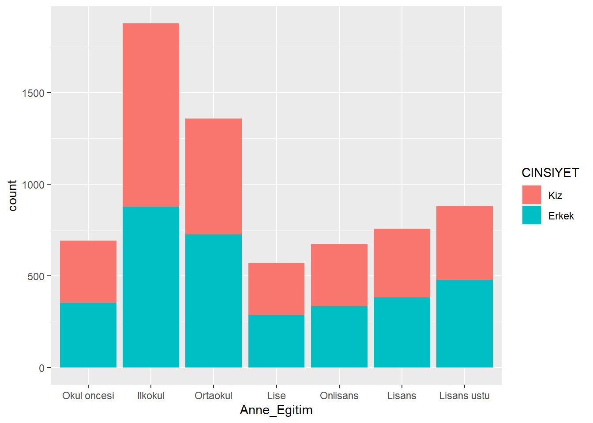
# yan yana
ggplot(midiPISA_filtered , aes(x = Anne_Egitim , fill = CINSIYET )) +
geom_bar(position = "dodge")Pek çok görselleştirmede, grafikteki eksen etiketlerini değiştirmek isteyebilirsiniz. Buradaki örnekte “CINSIYET” ve “Anne_Egitim” etiketleri biraz daha açıklayıcı hale getirilebilir.
Bir ggplot() grafiğinin etiketlerini değiştirmek için grafiğe + labs() katmanı eklenir. Bu katmanda x, y, ve fill etiketlerini, ayrıca grafiğin başlığını belirleyebilirsiniz.
ggplot(midiPISA_filtered , aes(x = Anne_Egitim , fill = CINSIYET )) +
geom_bar(position = "dodge") +
labs(x = "Eğitim Düzeyi",
fill = "CINSIYET",
y = "Sayi") 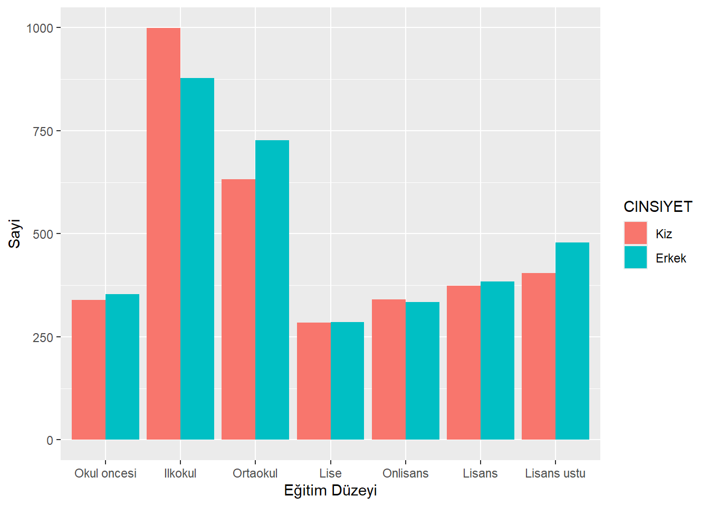
2 Sayılardan Oranlara
Bazen ham gözlem sayıları yararlı olsa da çoğu zaman oranlar daha ilgi çekicidir. Bu oranları kafamızdan tahmin etmeye çalışabiliriz ama R ile açıkça hesaplamak çok daha kolaydır.
2.1 Sayılardan Oranlara Geçiş
her kategoriye düşen gözlemlerin toplam içindeki oranlarını görmek istiyorsak, önceki tablomuzu biraz değiştirmemiz gerekir. Bunun için her bir cinsiyet ve sınıfkombinasyonunda gözlemlerin toplam gözlemler içindeki oranını hesaplayan bir sütun eklemeliyiz.
Her düzeydeki gözlemleri saydıktan sonra, mutate() fonksiyonu ile bu düzeylere düşen gözlemlerin oranını hesaplarız. Bu oranları prop adlı yeni bir değişkene kaydederiz.
Daha önce olduğu gibi, uzun tabloyu geniş tabloya dönüştürürüz (pivot_wider()). Ancak burada tabloya eklenmiş ekstra bir sütun (n) vardır ve biz bu sütunu tabloda istemiyoruz. Bu nedenle id_cols argümanına, tabloya dahil etmek istediğimiz değişkenlerin isimlerini bir vektör olarak belirtmemiz gerekir. Böylece names_from ve values_from için kullanılan değişkenler dışında kalan sütunlar korunmuş olur.
midiPISA |>
count(CINSIYET, SINIF) |>
group_by(SINIF) |>
mutate(prop = n / sum(n)) |>
pivot_wider(id_cols = CINSIYET,
names_from = SINIF, values_from = prop)3 Koşullu Oranlar
Değişkenler arasındaki sistematik ilişkilerle ilgileniyorsak, koşullu oranlara bakmamız gerekir.
Bu koşullu oranların tablosunu oluşturmak için, oranları hesaplamadan önce bir gruplama değişkeni belirtmemiz gerekir. Bu gruplamayı, group_by() fonksiyonu ile yaparız.
👉 Satırlara göre koşullandırma (yani satırların toplamı = 1).
ggplot(midiPISA, aes(x = CINSIYET, fill = SINIF)) +
geom_bar(position = "fill") 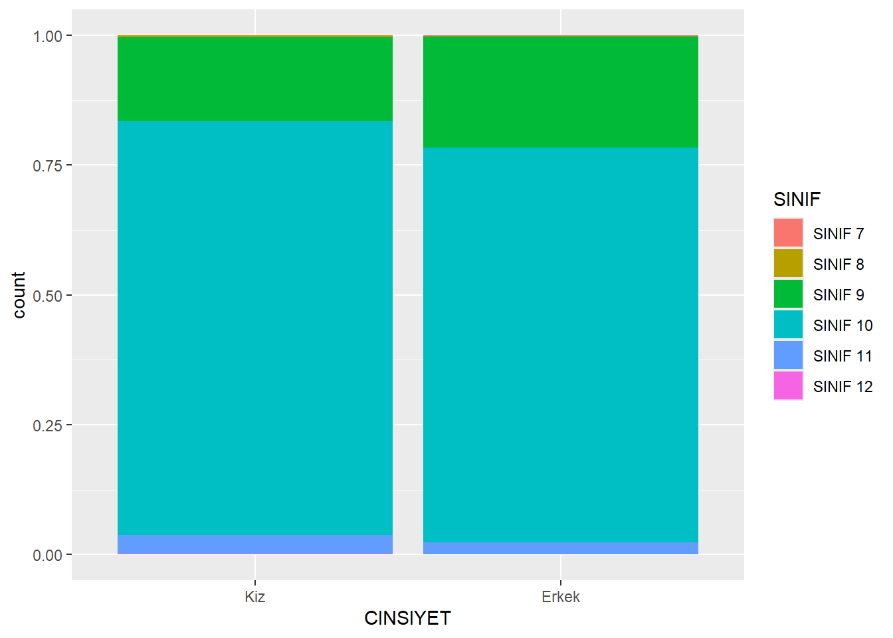
ggplot(midiPISA, aes(fill = CINSIYET, x= SINIF)) +
geom_bar(position = "fill") 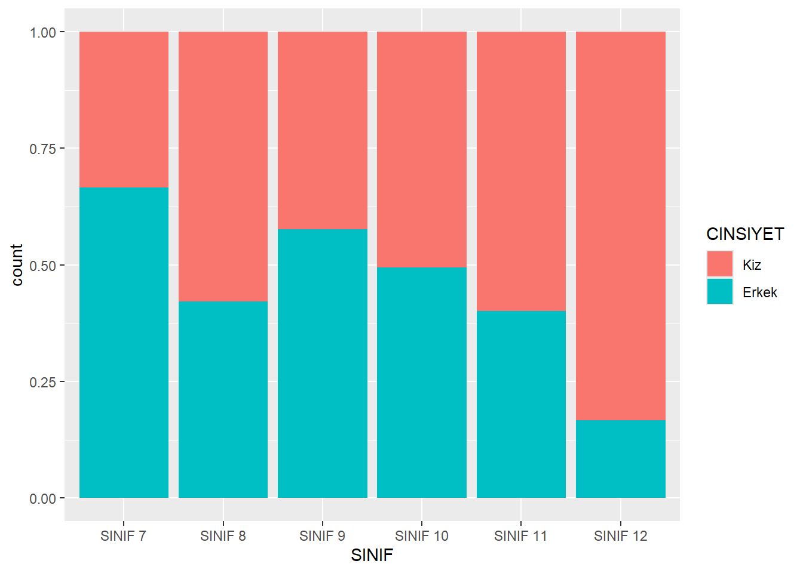
4 Tek Değişkenin Dağılımı
Tek bir değişken (örneğin CINSIYET) için frekans tablosu oluşturmak için yine count() fonksiyonunu kullanabiliriz. Bu daha basit tabloyu düşünmenin bir yolu da şudur: Orijinal iki yönlü tabloda (iki kategorik değişkenle) her bir SINIF düzeyindeki hücreleri toplayarak özetledik. Diğer değişkenler üzerinden toplama yaptığımız için bu özetleme bazen marjinal dağılım (marginal distribution) olarak adlandırılır.
midiPISA |>
count(CINSIYET)midiPISA |>
count(CINSIYET,SINIF) |>
pivot_wider(names_from = CINSIYET , values_from = n)5 Basit Çubuk Grafik
Basit çubuk grafik oluşturmanın sözdizimi oldukça basittir; bunu dersin başında görmüştük. Bunun için aes içinden fill = align argümanını çıkarmamız yeterlidir.
- cinsiyet
ggplot(midiPISA, aes(x = CINSIYET)) +
geom_bar()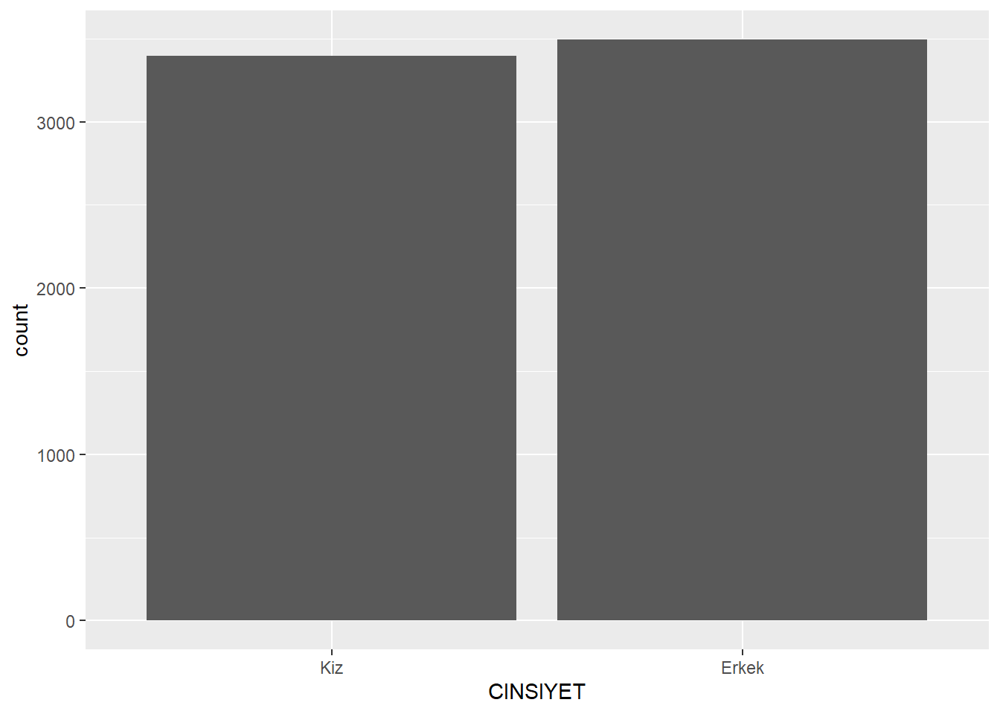
- sınıf düzeyi
# Yeni sıralamayla çubuk grafik
ggplot(midiPISA, aes(x = SINIF)) +
geom_bar(fill = "steelblue") +
labs(title = "Sınıf Düzeylerinin Dağılımı",
x = "Sınıf",
y = "Öğrenci Sayısı")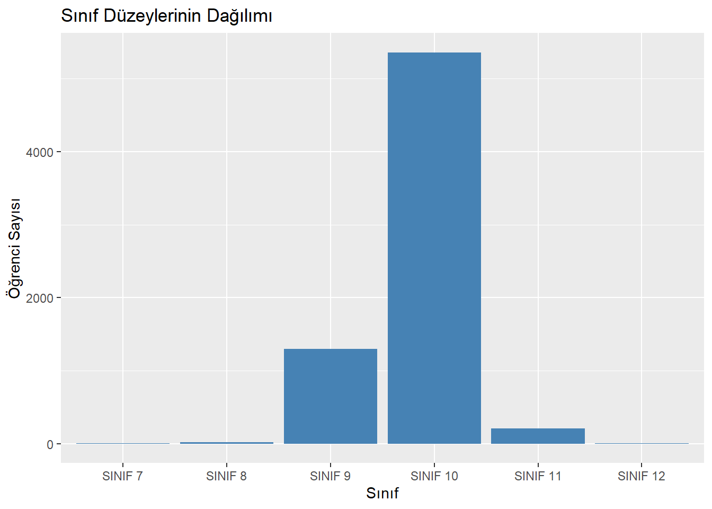
6 Faceting (Alt Grafikler)
Tek bir değişkenin dağılımını görselleştirmenin başka yararlı bir yolu, onu başka bir değişkenin belirli bir değerine göre koşullandırmaktır. Örneğin yalnızca 10. Sınıf öğrencileri için CINSIYET dağılımını görmek isteyebiliriz.
Bunu yapmak için:
Veri setini filtreleyip sadece SINIF= “10” olanlarla bir çubuk grafik çizebiliriz,
Ya da faceting tekniğini kullanabiliriz. Faceting, veriyi bir kategorik değişkenin düzeylerine göre alt gruplara ayırır ve her düzey için ayrı bir grafik oluşturur.
7 Facet’li Çubuk Grafikler
ggplot2’de faceting uygulamak için grafiğe sadece bir katman daha ekleriz. Bunun için facet_wrap() fonksiyonu kullanılır. İçine tilde (~) ve facet yapmak istediğimiz değişkenin adı yazılır (örn. ~SINIF).
Bu, yukarıdaki grafiği oluştur ama bunu SINIFdeğişkenine göre parçala anlamına gelir.
Yüm sınıf düzeyleri için grafikler elde edilir.
ggplot(midiPISA, aes(x = CINSIYET)) +
geom_bar() +
facet_wrap(~SINIF)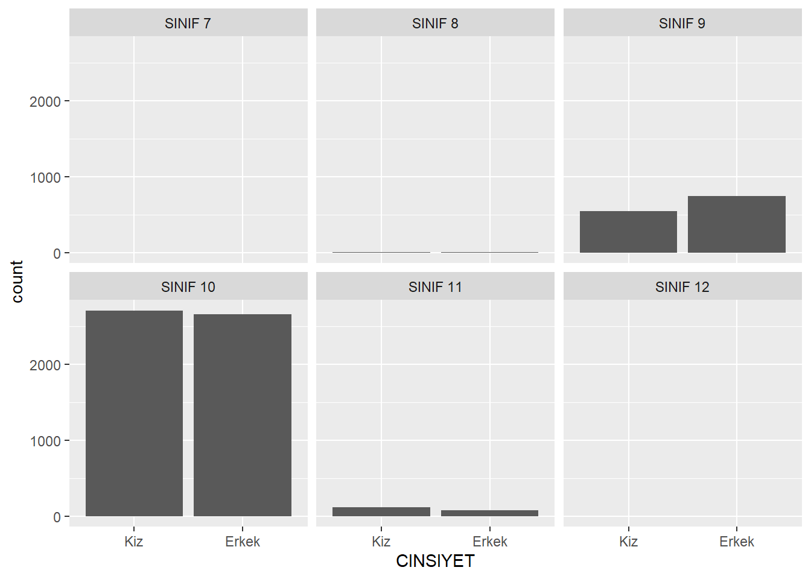
8 Faceting ve Yığma
Özünde, facet’li grafik dersin başında gördüğümüz yığılmış çubuk grafiklerin farklı bir düzenlemesidir.
Facet’ler ya da yığılmış çubuklar:
Tek bir değişkenin dağılımını görmek için tek bir facet’e ya da çubuğa,
Değişkenler arasındaki ilişkiyi görmek için facet’ler ya da çubuklar arasında karşılaştırma yapmaya olanak tanır.
ggplot(midiPISA, aes(x = CINSIYET ,fill = SINIF)) +
geom_bar() 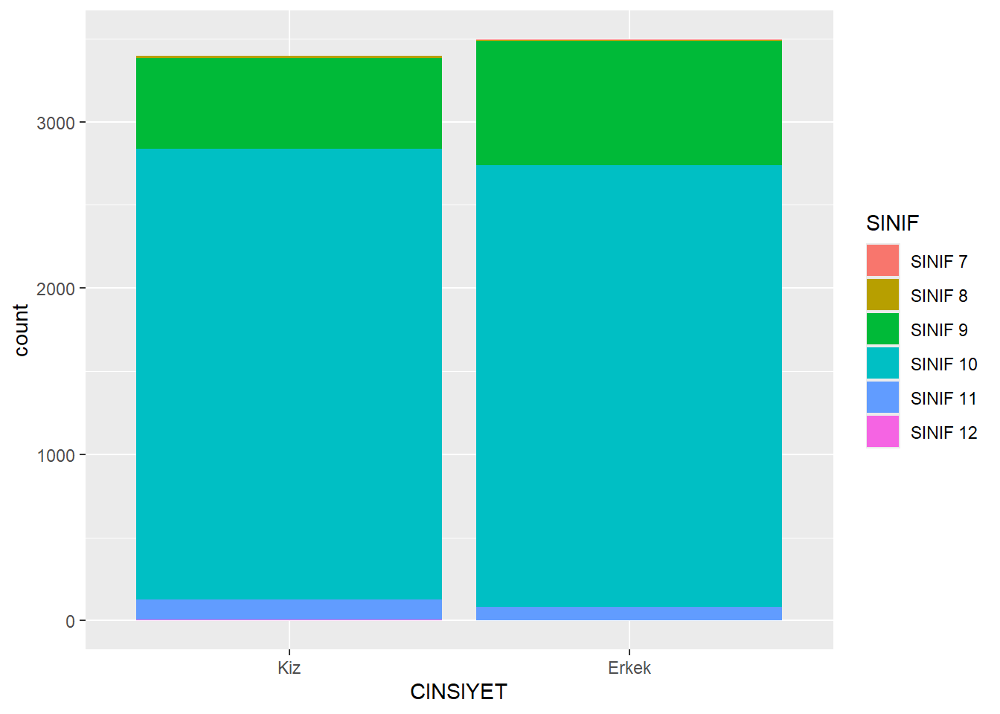
9 Pasta Grafiği
Pasta grafiği, kategorik verileri göstermenin yaygın bir yoludur. Dilimlerin büyüklüğü, o düzeydeki gözlem oranını gösterir.
ggplot(midiPISA, aes(x = "", fill = SINIF)) +
geom_bar(width = 1) +
coord_polar("y") +
labs(title = "Sınıf Dağılımı (Pie Chart)", fill = "Sınıf")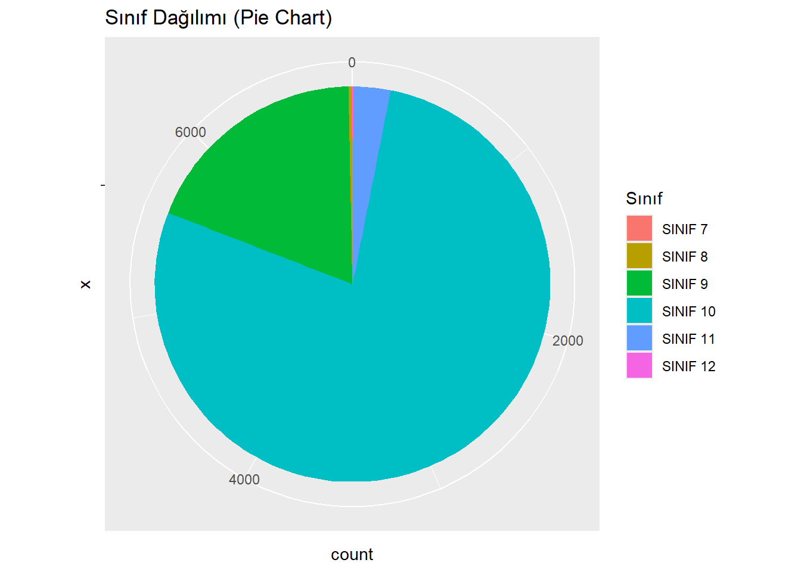
- cinsiyete göre
ggplot(midiPISA, aes(x = "", fill = SINIF)) +
geom_bar(width = 1) +
coord_polar("y") +
facet_wrap(~CINSIYET) +
labs(title = "Cinsiyete Göre Sınıf Dağılımı", fill = "Sınıf")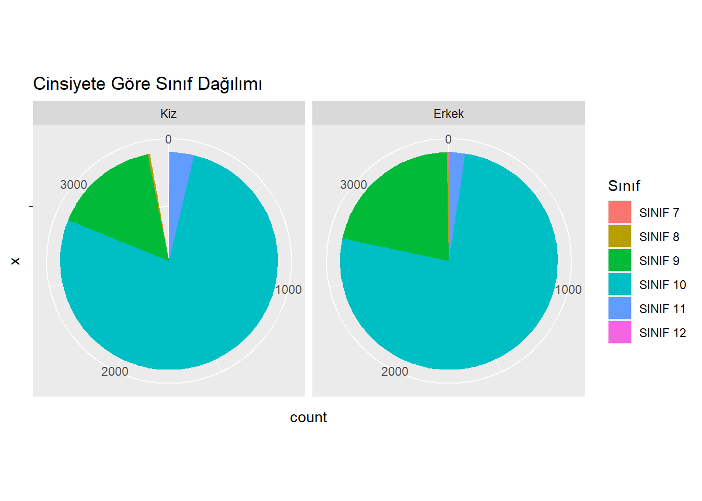
- oranları ekle
pie_data <- midiPISA %>%
count(CINSIYET, SINIF) %>%
group_by(CINSIYET) %>%
mutate(prop = n / sum(n),
label = scales::percent(prop, accuracy = 1))
# Pasta grafik + etiketler
ggplot(pie_data, aes(x = "", y = prop, fill = SINIF)) +
geom_col(width = 1) +
coord_polar("y") +
facet_wrap(~CINSIYET) +
geom_text(aes(label = label),
position = position_stack(vjust = 0.5), # dilimin ortasına koy
color = "white",
size = 4) +
labs(title = "Cinsiyete Göre Sınıf Dağılımı",
fill = "Sınıf",
x = NULL, y = NULL) +
theme_void()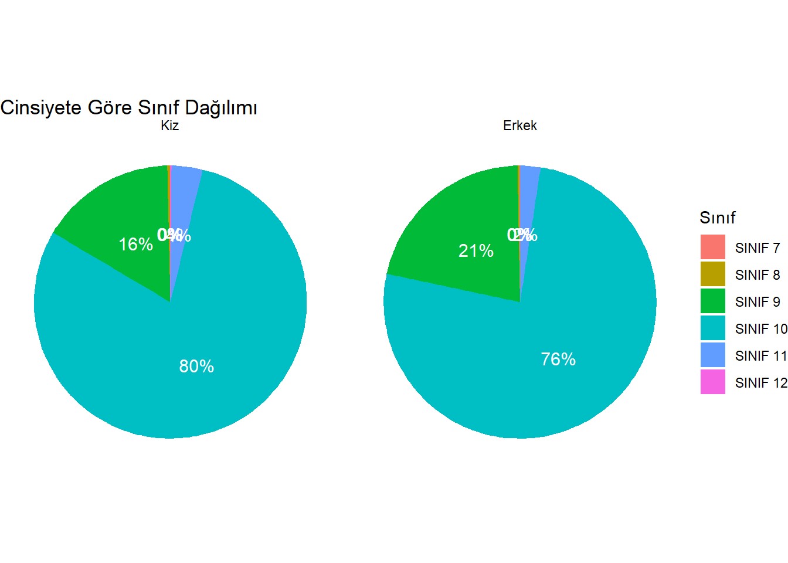
library(dplyr)
pie_data <- midiPISA %>%
count(SINIF) %>%
mutate(prop = n / sum(n),
label = scales::percent(prop, accuracy = 1))
ggplot(pie_data, aes(x = "", y = prop, fill = SINIF)) +
geom_col(width = 1, color = "white") +
coord_polar("y") +
geom_text(aes(label = label),
position = position_stack(vjust = 0.5),
color = "white", size = 4) +
labs(title = "Sınıf Dağılımı (%)", fill = "Sınıf") +
theme_void()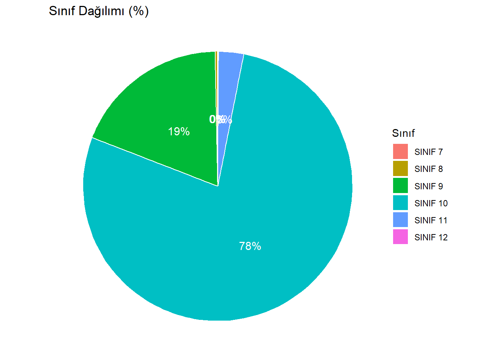
library(dplyr)
library(plotly)
Attaching package: 'plotly'The following object is masked from 'package:ggplot2':
last_plotThe following object is masked from 'package:stats':
filterThe following object is masked from 'package:graphics':
layout# Veri: SINIF değişkenine göre sayılar
pie_data <- midiPISA %>%
count(SINIF)
# Etkileşimli pie chart
plot_ly(pie_data,
labels = ~SINIF,
values = ~n,
type = "pie",
textinfo = "label+percent", # etiket + yüzde
insidetextorientation = "radial") %>%
layout(title = "Sınıf Dağılımı (Pie Chart - Plotly)")